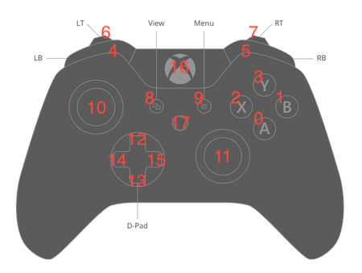

Introduction
This is the official documentation for Awesome_E's modded player actions.
Requirements
The first parameter of the comment block (shown above) contains all of the webplayer command text (shown below).
The code below shows the basic structure of a webplayer command:
_ae_webplayer_action: { "name": "isComputer" }
In order to be recognized by the webplayer, there are a few requirements:
- You must acquire secret blocks. Otherwise, you will not have access to the "comment" block that is required to perform any webplayer actions.
- You must be using the comment block, or if inside a conditional, the "»" block.
- Both the "comment" block and the "»" block have the ID 22. No other blocks will be recognized by the modded webplayer.
- Every webplayer command must begin with
_ae_webplayer_action:, then have all of its JSON data after it. - Your entire command string is put into the first parameter of the comment block.
Every command has two traits at the root level:
- Name: This is the name of the command
- Args: These are arguments that describe the behavior of that command. If the command does not require any arguments, you may omit (remove) this trait.
*Note: In this documentation, arguments for commands may appear as "args" (referring to the entire list [arg0, arg1, arg2, ...]) or as "arg0","arg1", etc. (individual arguments).
Any additional traits are ignored.
Additional Data
Any additional data is passed through the second parameter of the comment block (shown above). It replaces any location where the string
"_data"(with quotes) shows up.
Usage:
_ae_webplayer_action: { "name": "checkKey", "args": ["_data"] }
This is NOT required. If you are new to using webplayer actions, I recommend skipping this section until you need to pass variable data into your webplayer action.
Examples:
"args":["_data"]with parameter data LAST_TOUCH_X will be replaced with the output"args":[512]"args":["_data"]with parameter data USERNAME will be replaced with the output"args":[Awesome_E]and will throw a parsing error becauseAwesome_Eis not a defined variable in the player's JS file"args":[""_data""]with parameter data USERNAME will be replaced with the output"args":["Awesome_E"]and will run successfully
Constants
These actions will return the same value every time and are useful for identifying basic information about the user's device to enhance their experience with the project.
Is Web Explorer
Because you want to use the data that the webplayer action returns, you should use the "»" block, as that will convert the output into something Hopscotch can read. If you are in the modded player, the variable gets set to
1; otherwise it gets set to0.
_ae_webplayer_action: { "name": "isWebExp" }
This action returns true every time, allowing for a quick and easy method to detect whether a user is in my modded player. In my modded player, it simply returns 1.
You can use this action to determine whether other modded features will work in the current player.
| name | args | output |
|---|---|---|
| isWebExp | <This command has no arguments> | 1 |
Is Computer
This will set the variable "On Computer" to
1or0, depending on whether the user is on a computer. If run from the Hopscotch App, the blank string returned from the "»" block is still not equal to1, so it gets set to0.
_ae_webplayer_action: { "name": "isComputer" }
This action returns 1 if the user is on a computer and 0 if they are not.
One use case of this is removing touch controls for a platformer for computer players in order to free up screen space, then adding keyboard support to better the user experience (UX).
| name | args | output |
|---|---|---|
| isComputer | <This command has no arguments> | 0 or 1 |
User Time Zone
This Hopscotch code will set the variable "Time Zone" to the device's time zone.
_ae_webplayer_action: { "name": "user-tz" }
This action returns the user's time zone, rounded to the nearest hour offset from UTC/GMT time. For example, EDT returns -4 because it is 4 hours behind UTC/GMT.
While the recent addition of user variables allows you to do this by checking the hour and the Unix Timestamp, this option is available for non-subscribers as well as older player versions.
| name | args | output |
|---|---|---|
| user-tz | <This command has no arguments> | integer, -12 to 12 |
Dark Mode Enabled
This Hopscotch code will set the variable "Dark Mode" to
1if the user is in dark mode in the modded player when the action is run.
Usage:
_ae_webplayer_action: { "name": "user-darkmode" }
This actions returns 1 if the user is in dark mode, and 0 if the user is not.
This is useful in projects that default to a light-theme because it would allow the default to be set to dark mode if the user prefers dark mode, and it would also allow the user to switch the project theme by toggling their system setting.
| name | args | output |
|---|---|---|
| user-darkmode | <This command has no arguments> | 0 or 1 |
JavaScript Debug
While unconventional for drag-n-drop programming, logging data, alerting it, or freezing the project for an input can be extremely useful for debugging a project (especially because you aren't editing it in the Hopscotch app when you run it in my player).
The following actions perform standard JavaScript methods to help with just that.
Console Log
This will log
hello,123to the browser console:
_ae_webplayer_action: { "name": "js-console-log", "args": [ "hello", 123 ] }
As the name implies, this simply logs a message to the browser console.
| name | args | output |
|---|---|---|
| js-console-log | Items to log in the browser console. Array entries are joined with commas. | <nothing> |
Alert
This will alert the current object's
X Positionto the user:
_ae_webplayer_action: { "name": "js-alert", "args": ["_data"] }
This behaves exactly like js-console-log, but it alerts the arguments in a popup dialog instead of logging them to the browser console.
This is more useful for testing projects from iOS, since you need a Mac to access the browser's console (which is not accessible to everyone) whereas a popup dialog will show up on the iOS device itself.
| name | args | output |
|---|---|---|
| js-alert | Items to display in the popup. Entries are joined with commas. | <nothing> |
Prompt
This will freeze the project to ask for the user's favorite fruit (prefilled with "Apple"), then save that user input to the variable "Preference"
_ae_webplayer_action: { "name": "js-prompt", "args": ["Enter your preferred fruit:", "Apple"] }
Stops the project to ask for a user input, which is returned as output.
This is useful in cases where you don't want other objects to continue executing code while the user is inputting text. For example, if you want to space objects apart when game starts, you wouldn't want any objects to set position before the user inputs the global value.
| name | arg0 | arg1 | output |
|---|---|---|---|
| js-prompt | The prompt message [string] | Default (prefilled) value [string] | <nothing> |
User Interface
These actions interact with the user interface in the player.
Restart Project
This code restarts the project:
_ae_webplayer_action: { "name": "restart" }
As the name indicates, this action will restart the project. It runs the click action for the restart button, giving the project a full restart.
This may be useful for an "instant retry" mechanism in a speedrun project in a place where the player cannot progress.
| name | args | output |
|---|---|---|
| restart | <This command has no arguments> | <nothing> |
Achievement
This is the current syntax of the achievement command:
_ae_webplayer_action: { "name": "achievement", "args": [ "<img src=\"https://i.imgur.com/S3Q882k.png\" width=\"48\"/><div><span class=\"achievement-name\">Starbound</span><span class=\"achievement-description\">Collect 10 stars</span></span></div><i class=\"fa fa-close\" onclick=\"banner(false)\"></i>" ] }
The achievement action creates a dropdown from the upper-righthand corner, alerting the user that they unlocked a rare achievemnt in your game.
Current Syntax (supports custom HTML):
| name | arg0 | output |
|---|---|---|
| achievement | HTML to display inside of the achievement banner <string> | <nothing> |
The following syntax can also be used:
_ae_webplayer_action: { "name": "achievement", "args": [ "Starbound", "Collect 10 stars", "https://i.imgur.com/S3Q882k.png" ] }
The new syntax aims to simplify the creation of an achievement. It does get rid of custom HTML support, but it is supported alongside the original syntax.
Revised Syntax:
| name | arg0 | arg1 | arg2 | output |
|---|---|---|---|---|
| achievement | Name <string> | Description <string> | Image URL [string] | <nothing> |
Checking Hardware
Check One Key in a List
The following code will return whether the right arrow or the letter "D" is pressed:
_ae_webplayer_action: { "name": "checkKey", "args": [39,68] }
This action will return 1 if ANY of the keys in the arguments are currently being pressed.
| name | args | output |
|---|---|---|
| checkKey | Every keycode to check for, in a comma-separated list | 0 or 1 |
Advanced: If you want to have the keys being checked to be controlled by variables, use the "»" block with a data parameter, then pass in "_data" into the arguments list.
Check All Keys in a List
The following code will check if the shift key AND the letter "H" are prressed:
_ae_webplayer_action: { "name": "checkKeyAll", "args": [16,72] }
This action, like checkKey, will check if certain keys are pressed. However, it will only return 1 if ALL KEYS on the list are being pressed.
| name | args | output |
|---|---|---|
| checkKeyAll | Every keycode to check for, separated by commas | 0 or 1 |
Advanced: If you want to have the keys being checked to be controlled by variables, use the "»" block with a data parameter, then pass in "_data" into the arguments list.
Check Controller Buttons
This conditional will be run if the
△orYbutton is pressed:
_ae_webplayer_action: { "name": "checkControllerButton", "args": [0,0,2] }
The code below will check if both the left and right bumper buttons are pressed.
LB+RB(XBOX) /L1+R1(PS)
_ae_webplayer_action: { "name": "checkControllerButton", "args": [ 0, 2, [4,5] ] }
This code will check if either the left or right joysticks are pressed on the 2nd connected controller (index 1):
_ae_webplayer_action: { "name": "checkControllerButton", "args": [ 1, 2, [10,11] ] }
Both pressed →
1, either →1, none →0
This will set the variable
P1 Left Triggerto the left trigger's X value on the first controller (controller 0):
_ae_webplayer_action: { "name": "checkControllerButton", "args": [0,0,6] }
The value stored can range from anywhere between
0(not pressed) and1(fully pressed), inclusive. If checking if a button press is equal to1, triggers will need to be fully pressed. Otherwise, check above a certain threshold or if the button press isnot 0.
This action checks the press state of buttons on a controller. It can:
- Check the press state of any one button
- Check if any buttons in a given array are pressed
- Check if all buttons in a given array are pressed
| name | arg0 | arg1 | arg2 | output |
|---|---|---|---|---|
| checkControllerButtons | Controller ID | Mode | Button ID | number |
Controller ID
This is the index of the controller, as determined by the browser. The first controller connected will have and ID of 0, the second controller 1, and so on.
Mode
You can check controller buttons using the following modes:
- Checks the value of the specified controller button. This will return a floating point number between
0and1, inclusive.
NOTE: Most buttons will either return0or1, but some buttons, such as triggers, can return decimals. - Checks if any of the specified button IDs are pressed. Returns
1if any button is pressed, otherwise returns0 - Checks if all of the specified button IDs are pressed. Returns
1if every button is pressed, otherwise returns0
Button ID
Every button on the controller is mapped to an ID. You can test your gamepad inputs using this website or refer to the following controller mappings:

Original XBOX Controller Image
Original PlayStation Controller Image
Advanced: If you want to have the buttons being checked to be controlled by variables, use the "»" block with a data parameter, then pass in "_data" into the arguments list.
Check Controller Axes
The following command will set
Left Joystick Yto the vertical (Y) value of the left joystick on the first connected controller:
_ae_webplayer_action: { "name": "checkControllerAxis", "args": [0,1] }
This command will set
P2 Right Stick Xto the hoizontal (X) value of the right joystick on the second connected controller:
_ae_webplayer_action: { "name": "checkControllerAxis", "args": [1,2] }
This action returns the value of one of your controller's axes. Each joystick is separated into 2 axes, one for X direction (horizontal inputs) and one for Y direction (vertical inputs).
| name | arg0 | arg1 | output |
|---|---|---|---|
| checkControllerButtons | Controller ID | Axis ID | number |
Controller ID
This is the index of the controller, as determined by the browser. The first controller connected will have and ID of 0, the second controller 1, and so on.
Axis ID
For most controllers, axes 0 and 1 are the X and Y values (respectively) of the left joystick, and axes 2 and 3 are the X and Y values (respectively) of the right joystick.
Output
A floating point number between -1 and 1, depending on the position of each joystick or axis.
Read the Last Scroll Point
Local Save Data
These actions allow you to work with data that gets stored locally in the user's web browser. This data will persist between plays and whenever the user closes the browser (unless in private browsing mode, in which case the data gets cleared by the browser). While Hopscotch offers an easier-to-use implementation called "User Variables", this feature is free, although it only works in my modded player.
Read from Save Data
This code will set the variable "Level" to the local save called "Stage". If that doesn't exist, it will default to 1, as specified in the arguments:
_ae_webplayer_action: { "name": "newdata-read", "args": ["Stage",1] }
Reading from local savedata allows you to retrieve information previously stored locally in the user's browser. For example, you can load a stage/level so that a user can save their progress.
| name | arg0 | arg1 | output |
|---|---|---|---|
| savedata-read | property <string> | default <number/string> | value <string> |
property refers to the name of the local save, e.g. "Level"
default is the value returned if the local save does not exist.
value is the value saved under the specified property name.
Write to Save Data
When put into the block shown above, this code will create a local save called "Stage", and it will have the value of the variable "Level":
_ae_webplayer_action: { "name": "newdata-write", "args": ["Stage","_data"] }
Writing to Save Data refers to either creating a new property or modifying an existing one. This action allows you to specify a property to update, as well as its new value.
If the property does not already exist, it will be created. Otherwise, it will be overwritten.
| name | arg0 | arg1 | output |
|---|---|---|---|
| savedata-write | property <string> | value <number/string> | <nothing> |
property refers to the name of the local save, e.g. "Level"
value is the new value to be stored under that local save.
Delete Save Data
This will delete the locally stored "Stage":
_ae_webplayer_action: { "name": "newdata-delete", "args": ["Stage"] }
This action simply deletes any value that was stored under the specified property, which makes for a fast and simply reset mechanism in a game.
| name | arg0 | output |
|---|---|---|
| savedata-write | property <string> | <nothing> |
URL Actions
These actions allow you to display approved webpages in frames or navigate to them. I am keeping a list of apprroved and rejected subdomains that determine whether the action will run or throw a popup error.
URL Popup
The following code will create a popup of HS Tools:
_ae_webplayer_action: { "name": "url-iframe", "args": ["https://ae-hopscotch.github.io/hs-tools/"] }
The URL Popup action displays a given URL in an iframe on the current page, which will be put on top of the project being played.
| name | arg0 | output |
|---|---|---|
| url-iframe | url <string> | <nothing> |
Go to URL
The following code will redirect the user to HS Tools:
_ae_webplayer_action: { "name": "url-goto", "args": ["https://ae-hopscotch.github.io/hs-tools/"] }
This action will redirect the page to the URL passed in as input.
| name | arg0 | output |
|---|---|---|
| url-goto | url <string> | <nothing> |
Hopscotch Data
With these actions, you can display any user information provided by Hopscotch's v2/users API, which currently only includes nickname, avatar type, and plants.
Load User Data
The code below will load the user data for user 5947972
_ae_webplayer_action: { "name": "userdata-read", "args": ["5947972"] }
This block retrieves the user data of a specified User ID and stores it temporarily (until you leave or reload the page).
| name | arg0 | output |
|---|---|---|
| userdata-load | user_id <integer> | <nothing> |
You must load user data before reading it with the read user data command. Also, since it retrieves data from the internet, you will need some wait time between loading the data and reading traits. See the demo for a "wait until loaded" block (not a rainbow block/ability, just one block).
Read User Traits
This code will set the variable "Nickname" to the nickname of user 5947972, which is
Jeffery Jr.
_ae_webplayer_action: { "name": "userdata-read", "args": ["5947972","nickname"] }
This block allows you to read user traits of users that have already been loaded usingthe userdata-read command. If no trait is specified in the second argument, this action will return the entire dictionary (JSON object).
| name | arg0 | arg1 | output |
|---|---|---|---|
| userdata-read | user_id <integer> | trait [string] | string or integer; the trait's value |
*Currently, you can specify trait as "nickname", "avatar_type", or "plants". You can also omit the trait.
Global Variables
Global Variables provide you access to realtime variables that can be read from any device in the modded player. These are tied to the user and not the project, meaning that the same variables are shared across all of your projects. You can access variables that you set in one project in the future from any project, as long as the creator's user ID is the same. If you want your variables to be project-specific, I recommend adding the project UUID before the variable name. (Example: 10iu14ay37-world_record)
However, these are not intended for multiplayer use, as there are dedicated blocks to better manage multiplayer than just using global variables.
Connect to the Server
Run this exact command to connect to the global variables server:
_ae_webplayer_action: { "name": "globalvar-connect" }
This action will connect the project to the global variables server.
Run this command before reading or writing any global variables. I recommend running this block on game starts so you have access to global variables almost immediately.
(I don't automatically run this for every project because I don't want every project, most of which are not modded in any way, to connect automatically and use bandwidth.)
| name | args | output |
|---|---|---|
| globalvar-connect | <This command has no arguments> | <nothing> |
Read Global Values
This Hopscotch block (above) will set the project's "High Score" variable to the global variable called
global_best, using the code below:
_ae_webplayer_action: { "name": "globalvar-read", "args": ["global_best"] }
Once you have connected to the global variables server, run this command along with a key (variable name) to read the data stored under it.
| name | arg0 | output |
|---|---|---|
| globalvar-read | key <string> | any; the key's value |
*Note: key simply refers to a string that the value is stored under. Essentially, it is just the variable name.
Write Global Values
Using the command below, the Hopscotch block (shown above) will set the global variable called
global_bestto the current project's high score.
_ae_webplayer_action: { "name": "globalvar-write", "args": ["global_best","_data"] }
After connecting to the global variable server, running the globalvar-write block will override the specified key with the value you provide. More times than not, you will run this block inside of a conditional.
| name | arg0 | arg1 | output |
|---|---|---|---|
| globalvar-write | key <string> | new value <any> | <nothing> |
Multiplayer Actions
Multiplayer actions provide the foundation for the core aspects of multiplayer: creating, joining, and leaving rooms, in addition to reading and writing user-specific and global (limited to each room, of course) data.
To prevent code modification, multiplayer actions will not execute if the project is run from the Project Builder.
Start a Session
Use this exact code in your game to start a session:
_ae_webplayer_action: { "name": "socket-create" }
This action starts a multiplayer session with a random join code consisting of only numbers and lowercase letters. For safety reasons, there is no configuration to change this join code.
| name | args | output |
|---|---|---|
| socket-create | <This command has no arguments> | <nothing> |
Join a Session
Use this code in your game to join a session, where
abc123is the join code. If you don't have it already, leave it blank to prompt the user to enter one.
_ae_webplayer_action: { "name": "socket-join", "args": ["abc123"] }
This action prompts the user to join a multiplayer room by entering/pasting in the 6-character join code generated by the host's device. Be aware that reading session data in the same rule may cause issues in the project, as joining a session requires a small amount of time.
If you have the user provide a join code through a Save Input block, you can pass it through to the socket-join command arguments to use that code to join a room.
| name | arg0 | output |
|---|---|---|
| socket-join | code [string] | <nothing> |
Leave the Session
Run this exact code to leave the multiplayer room:
_ae_webplayer_action: { "name": "socket-leave" }
This command will disconnect you from the multiplayer room. If you are currently the host of this room, it will end the game for everyone.
| name | args | output |
|---|---|---|
| socket-leave | <This command has no arguments> | <nothing> |
Get the User's ID

This Hopscotch code will save the user's index to the project variable called "Player ID"
_ae_webplayer_action: { "name": "socket-playerdata", "args": ["get-index"] }
As the name implies, this command returns the user's index in the multiplayer room. The host is 0, and the player indices are in chronological order of time joined.
| name | arg0 | output |
|---|---|---|
| socket-playerdata | "get-index" | User ID <number> |
If you are the first person to join a host's game, this command will return 1. If you are the second person to join, it will return 2. And so on...
Read Room Properties
The code below will set the variable to the current room ID:
_ae_webplayer_action: { "name": "socket-room", "args": ["id"] }
This command lets you read several room properties. Using this command, you can read the following:
id: Returns the room IDis-locked: Returns whether the room is lockedread-limit: Returns the current max player count
| name | arg0 | output |
|---|---|---|
| socket-room | property <string> | string or integer; depends on property |
Write Room Properties
The code below will lock the multiplayer room and prevent new people from joining:
_ae_webplayer_action: { "name": "socket-room", "args": ["lock"] }
This command lets you write several room-level properties. In the first argument, pass in one of the following:
lock: This will lock the room and prevent new people from joiningunlock: This will unlock the room allow new people to join againset-limit: This will set the player limit to the second argument you pass in
| name | arg0 | arg1 | output |
|---|---|---|---|
| socket-room | property <string> | varies* | <nothing> |
*For set-limit, this takes in an integer between 1 and 64. For other commands, there is no input.
Read Session Data
This command will set the user's game variable "Level" to the room's value for
level. This can be useful when you are trying to sync a scene, room, or stage in your project.
_ae_webplayer_action: { "name": "socket-read", "args": [-2, "level"] }
Assume the Clone Index is
3(and the object renders the player with ID3). Since"_data"resolves to3, the above command will set self "Powerup" to player 3'spower:
_ae_webplayer_action: { "name": "socket-read", "args": ["_data", "power"] }
This command reads the value at the path provided for any given user. You can read nested traits using the . operator (Example: if the host stores level data in an array, you can get the first item with level_data.0)
In the example shown, the second parameter of the "»" block refers to the Player's index, with 0 being the host and -1 being a shorthand for "self" (your actual index will be greater than or equal to zero)
| name | arg0 | arg1 | output |
|---|---|---|---|
| socket-read | Player ID <integer> | Property Path <string> | Property Value <any> |
Player ID
Players IDs are as follows:
-2refers to the global object, or in this case, variables stored at the room level-1refers to self, the player running the command.0refers to the host the creator of the room.- Any subsequent players have the ID in the order they joined the room. (Where the 1st guest =
1, 2nd guest =2, etc.)
Property Path
*If
player_scoresis the following:
[
{ "name": "A", "score": 1 },
{ "name": "B", "score": 2 }
]
Then this code will set "Nickname" to the
nameof the first item when sorting by highestscore:
_ae_webplayer_action: { "name": "socket-read", "args": [-2, "player_scores.<sort:desc:score:0>.name"] }
Output:
B
This is the path to the variable you're storing, where . reads nested values.
- If "time" is set to
120, you can read it by providing the property pathtime - If you have a dictionary under "data" (
{ "color": "red", "number": 2 }), you can read the data'scolorwithdata.color - If the game data's variable "levels" has an array like this:
['aaaaa', 'bbbbb', ...],levels.0returns'aaaaa'. - If you need to sort an array, such as "scores" (
[2, 1, 3, 4]), you can use the sort operator to get the highest score:scores.<sort:desc:0> - You can even sort arrays of dictionaries, such as "player_scores"*
Note: the sort operator follows the form <sort:[direction]:criteria?:index>, where:
directionisascordesccriteriais the key used to sort dictionaries (omit this when sorting arrays of numbers or strings)indexis the item from that list which you want to return.
Write Session Data
This block will set the current (self, as defined in the first argument) user's
power(in the remote server, for this game) to the value of the self variable passed into the data parameter.
_ae_webplayer_action: { "name": "socket-write", "args": [-1, "power", "_data"] }
This command writes data to the server when given the following: a player index to write to, the property path (same as read), and the value.
| name | arg0 | arg1 | arg2 | output |
|---|---|---|---|---|
| socket-write | Player ID <integer> | Property Path <string> | Value <any> | <nothing> |
Player ID refers to the target user, that is, the user whose data will be overwritten.
- Use
-2to set a global game variable - Use
-1to set self properties - Use any other integer greater than or equal to
0to reference a player by index.
In most cases, you will be using -2 or -1 because you will only write data to the game as a whole or to update information about your player.
Property Path refers to what you are setting; it's essentially the name of the variable (unless it's nested, then it's the path to that variable). For more information on the structure of property paths, refer to the property path section in "Read Session Data"
Value will override the existing value, and it can be a number, string, boolean, or undefined (undefined will delete the property).